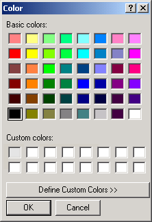
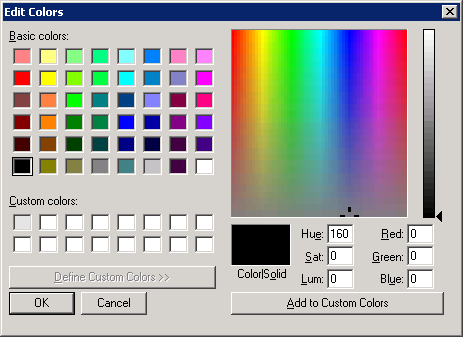
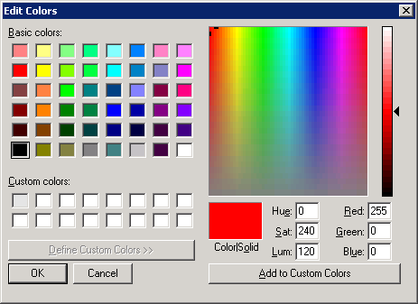
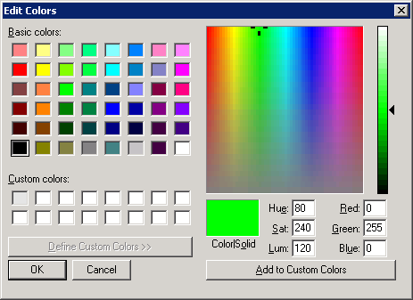
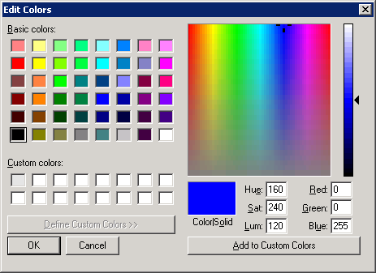
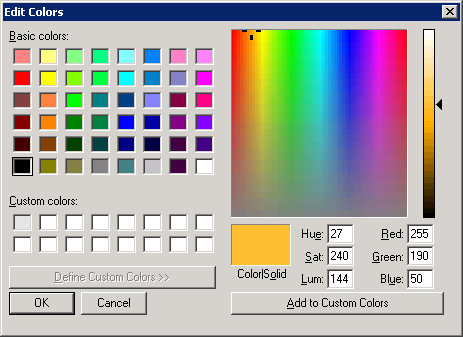
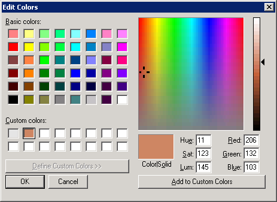
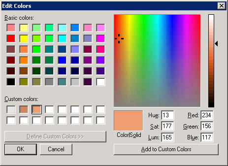
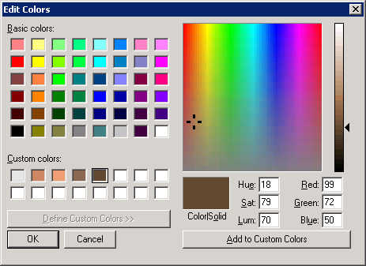

By default, the project has only standard colors and one additional gray color for no colored tiles.

As you can see, there are few colors that can be used for tiles.
But you can click "Define Custom Colors" and create your own ones.

We are interested in the values "Red", "Green" and "Blue." Value can range from 0 to 255.

Red |

Green |

Blue |

Some sand color |
Create custom color. In the "Additional Colors" list select an free cell.
Important! You first need to click the mouse somewhere in the color field - simple values
enter in the color fields may not change color. This error occurs, at least in Windows XP.
Enter value "206" in the "Red ", "132" - "Green" and "103" in the "Blue". Click "Add to Custom Colors".

Repeat the same again:
- In the "Custom Colors" list choose free cell
- Click the mouse somewhere in the color field
- Enter in the "Red" - "234" in the "Green" - "156" in the "Blue" - "117"
- Click "Add to Custom Colors"

Repeat two more times. The first set of numbers for the colors - "139", "104" and "82."
Second Set - "99", "72" and "50". As a result, we obtain the next set of colors:

These colors exist until the window of the "Color" dialog open. To have them for future we need
to save them. For this purpose from the main menu which calls the windows you must use menu item
"Save colors". In the Project Editor it is in the menu "Plot", in the Patterns Editor - "Drawing".
The colors are stored in the file.
There is also the "Load colors" option. As the name implies the color can be downloaded via it
from the file into the dialog "Color".